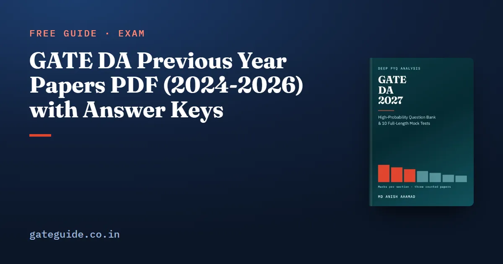

GATE DA Previous Year Papers PDF (2024-2026) with Answer Keys

There are exactly three GATE DA previous year papers, for 2024, 2025 and 2026, because the paper was first held in 2024. All three, with their official answer keys, are free on the official GATE website. This guide gives you the six files, shows how to read the keys without being misled, and teaches a method for turning three papers into honest practice.
In this guide
Key takeaways
- GATE DA has three papers only: 2024, 2025 and 2026. Anything dated earlier comes from another GATE paper.
- On 10 October 2026 the GATE 2027 download page at gate2027.iitm.ac.in listed all three DA papers and all three keys.
- Each paper is 65 questions and 100 marks, with the same layout every year, so a year and a question number identify one question.
- Use the official keys, not a solved-paper book. The 2024 key awards one flawed question to everyone.
- The 2027 DA syllabus names the same phrases as the syllabus all three papers were set on, so none of them is out of date.
- Three papers show what has been asked and in what shape. They are too few to show a trend.
What counts as a GATE DA previous year paper
Start with three terms, because the rest of this guide uses them. A question paper is the official PDF the organising institute published after the exam, with every question as it appeared on screen. An answer key is the separate official PDF that gives each question's type, key and marks. The organising institute is the IIT or IISc that ran GATE that year and set the papers.
GATE DA, the Data Science paper, has had three organisers: IISc Bengaluru in 2024, IIT Roorkee in 2025 and IIT Guwahati in 2026. GATE 2027 is organised by IIT Madras, which has never set a DA paper.
Remember: a "GATE DA question from 2019" does not exist. DA began in 2024, so any older question was set for another paper.
Where the six official files live
The simplest place to start is the current organiser's download page. On gate2027.iitm.ac.in/download, the year-wise section lists question papers with answer keys from 2021 to 2026, and the DA paper appears under 2024, 2025 and 2026. These are the direct files, checked on 10 October 2026:
| Year | Set by | Question paper | Answer key | Pages (paper / key) |
|---|---|---|---|---|
| 2026 | IIT Guwahati | 2026 paper | 2026 key | 39 / 2 |
| 2025 | IIT Roorkee | 2025 paper | 2025 key | 34 / 2 |
| 2024 | IISc Bengaluru | 2024 paper | 2024 final key | 41 / 2 |
The same files are also served by two earlier organisers. The IIT Guwahati download page carries the 2024 and 2025 DA files, and its site still serves the 2026 paper and key. IIT Roorkee's site still serves its own 2025 DA paper. If one link has moved, try another host before you conclude a file is gone.
To confirm that you have the official file, compare its size. The papers are 2,116,753 bytes (2026), 7,897,137 bytes (2025) and 991,009 bytes (2024). The keys are 516,882, 208,959 and 312,215 bytes. Each file was the same size on every host that served it.
Trap: a re-typed "DA paper with solutions" from an unofficial site may change a number or drop a figure. Practise from the official PDF and check answers only against the official key.
How to read a GATE DA answer key
Each key is a two-page table. For every question it gives the question type, the section, the key and the marks. The type is MCQ (one correct option of four), MSQ (one or more correct options) or NAT (a number you type). The key itself takes a different form for each type:
- For an MCQ, the key is one letter.
- For an MSQ, the key lists every correct option. You score only if you select all of them and nothing else.
- For a NAT, the key gives the accepted value or range. Your typed answer must fall inside it.
Three entries are worth knowing before you mark yourself. The 2024 key marks Q59 as MTA, marks to all: the joint density printed in that question integrates to 4, not 1, so everyone got its two marks. The 2026 key accepts a range of 2 to 3 for Q59, an integer answer. And three MSQs had exactly one correct option: 2025 Q27, 2026 Q23 and 2026 Q51.
The keys also record the session each DA paper was held in: Session 1 in 2024, Session 5 in 2025 and Session 8 in 2026. DA has been a single paper each year, so there is no second set to hunt for.
In one line: an MSQ can have a single correct option, so judge every option on its own and never tick a second one to "fill" the answer.
Before you print: layout and format
All three papers use the same layout. Questions 1 to 10 are General Aptitude, with 1 to 5 at one mark and 6 to 10 at two. The technical questions run from 11 to 65: 11 to 35 at one mark, 36 to 65 at two. That gives 30 one-mark and 35 two-mark questions, 100 marks in all, with General Aptitude at 15.
All three PDFs carry a text layer, so you can search them. But a text layer loses figures, tables and some formulas. Game trees, a B+ tree, functional-dependency arrows and dataset figures sit on the page as images. Read those questions from the page, not from copied text. The 2025 paper is the largest file, at nearly 8 MB, so download it on a stable connection.
How to sit a paper and mark it yourself
A previous year paper is worth most when you sit it like the real exam. The official free mock test teaches you the screen; the papers teach you the questions.
- Sit the paper in one block of 180 minutes, with only an on-screen scientific calculator, as in the exam hall.
- Write your answers on a sheet with the question number, type and your answer.
- Mark against the official key. Add the positive marks first.
- Subtract negative marks for wrong MCQs only: one-third of a mark for a one-mark MCQ, two-thirds for a two-mark MCQ. MSQ and NAT carry no negative marks. The marking scheme guide, common to every GATE paper, sets these rules out.
Worked example: marking one sitting
Suppose your sitting gives these results. These are made-up figures for practice, not anyone's real score.
| Group | Right | Wrong |
|---|---|---|
| One-mark MCQs | 18 | 3 |
| Two-mark MCQs | 10 | 4 |
| One-mark MSQ and NAT | 6 | 2 |
| Two-mark MSQ and NAT | 8 | 3 |
The score is the marks for right answers minus the MCQ penalties:
You attempted 54 of the 65 questions. The five wrong MSQ and NAT answers cost nothing, but the seven wrong MCQs cost 3.67 marks. That is what to look at first in your review. The guide on reviewing a mock test shows how to sort every wrong answer by its cause.
What three papers can and cannot tell you
Three papers are a small record. They show which topics have been examined and in what shape. They cannot show a trend: a section that rose in both steps would do so one time in three by chance alone.
What the record does show is useful. Probability and Statistics carried 15, 19 and 21 marks; Database Management and Warehousing ran 7, 11 and 18. Plan for each section's range, not its mean. The counted marks for every section are set out in the GATE DA subject-wise weightage guide, and the topics asked in every paper in the GATE DA 2027 important topics guide.
This guide points you to the papers. The GATE DA 2027 book counts all three question by question against the 2027 syllabus, and adds 907 questions written for the book with worked solutions and 10 full mock tests, so the three official papers are not your only timed practice.
Quick revision
- GATE DA has three papers: 2024, 2025 and 2026. Nothing earlier exists.
- All six files are on the download page of gate2027.iitm.ac.in; IIT Guwahati and IIT Roorkee mirror them.
- Each paper: 65 questions, 100 marks; GA is Q1 to Q10; one-mark technical is Q11 to Q35.
- Keys: MCQ one letter, MSQ every correct option, NAT a value or range.
- 2024 Q59 was marks to all; three MSQs had a single correct option.
- Negative marks only on wrong MCQs: one-third or two-thirds of a mark.
- Sit 2024 first as a map; keep 2025 and 2026 for timed sittings.
Frequently asked questions
Where can I download GATE DA previous year question papers?
From the official GATE website. On 10 October 2026 the download page of gate2027.iitm.ac.in listed the DA question paper and answer key for 2024, 2025 and 2026 under its year-wise question papers. The same files are also served by the IIT Guwahati and IIT Roorkee GATE sites. Download pages are reorganised every cycle, so check the current notification.
How many GATE DA previous year papers are there?
Three. GATE first set the DA paper in 2024, and there has been one DA paper a year since, in 2024, 2025 and 2026. Together they hold 195 questions and 300 marks. Any question sold as a DA previous year question from before 2024 was taken from some other GATE paper.
Is there an official answer key for every GATE DA paper?
Yes. Each of the three papers has its own official answer key PDF, two pages long, giving each question's type, section, key and marks. The 2024 file is the final answer key. Check your answers against these keys rather than a solved-paper book, because the keys also record the one question that was awarded to everyone.
Are the 2024 GATE DA questions still useful for the 2027 syllabus?
Yes. The DA syllabus has not changed an examinable word since the paper began, and the 2027 document names the same phrases as 2026. When all three papers were counted against the 2027 syllabus, no question fell outside it. So every paper, including 2024, is practice on the syllabus you will sit.
Which GATE DA paper should I solve first?
Start with 2024 as an untimed map of the question shapes, once you have studied a few sections. Keep 2025 and 2026 for full timed sittings later, because a paper you have already read cannot measure you again. Mark every sitting with the official negative marking and review it as carefully as a mock test.
Sources
- GATE 2027 official website (IIT Madras)
- GATE 2027 downloads, previous question papers and answer keys (official)
- GATE 2026 DA question paper (official)
- GATE 2026 DA answer key (official)
- GATE 2025 DA question paper (official)
- GATE 2025 DA answer key (official)
- GATE 2024 DA question paper (official)
- GATE 2024 DA final answer key (official)
- GATE 2026 downloads (official, IIT Guwahati)
- GATE 2025 DA question paper (official, IIT Roorkee)
- GATE 2027 DA syllabus (official PDF)
Dates, fees and the syllabus are set by the GATE 2027 organising institute and can change. Always confirm at gate2027.iitm.ac.in.